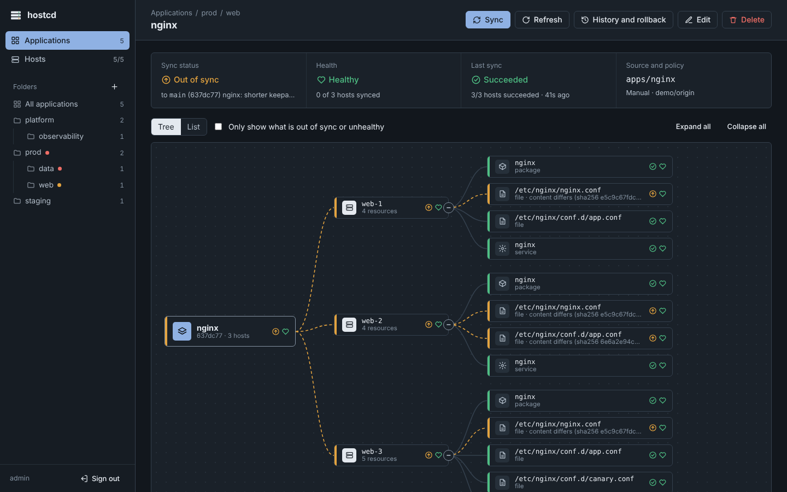

Your Linux fleet, reconciled to Git.
Detect drift, preview changes, and safely roll out Git-managed configuration across VMs and bare metal — without inbound agent ports or Kubernetes.

Transcript
GitOps for the Linux fleet outside Kubernetes.
For teams that outgrew running Ansible by hand or on cron, but don't want Puppet, NixOS, or to pull plain servers into Kubernetes just to get a reviewed, reversible source of truth.
Detect and repair drift
Continuously compare each host with Git and, per app, restore the declared state or just alert.
Preview before rollout
Review the exact host-level diff before a change is applied — the way the demo above shows it.
Approve production changes Team
Require review before production syncs, with a second approver on gated projects.
Roll back to a commit
Return an application to an exact previously applied revision, from the web UI.
No inbound agent access
Agents pull over HTTPS. Regular operation needs no inbound SSH and no open agent ports.
Audit every operation Automation · Team
Record who approved, applied or rolled back each change. Automate audit delivery and SIEM integration on Team.
Desired state in Git. Everything else reconciles.
Point an app at a Git folder and the hosts it covers. The control plane renders each host's manifest; the agent dials out, pulls it, and keeps the host matching.

Declare
An app points at a Git folder and a set of hosts — packages, files, services, users, cron, GPU stacks and more.
Render
One standalone control plane renders the desired state per host and tracks every revision.
Reconcile
Each agent dials out over HTTPS, pulls its manifest and applies it. Nothing inbound on the host.
Observe
Drift shows as a diff. Sync, roll back or prune from the web UI, with a full audit trail.
git (GitLab / GitHub / Gitea)
│ fetch, webhook
┌───────────▼───────────┐
│ hostcd-server │ UI + API · renders per host
│ (one per fleet) │ sync · history · rollback
└───────────▲───────────┘
long-poll HTTPS │ hosts only dial out — nothing inbound on them
┌──────────────┬────┴─────────┬──────────────┐
hostcd-agent hostcd-agent hostcd-agent hostcd-agent
web-1 web-2 db-1 stg-web-1
Keep your playbooks for provisioning. Move continuously-managed state to hostcd — for visible drift and self-heal.
A different problem, honestly
Ansible is a great tool — we used it too. It is push-based and one-shot: you run a playbook, it finishes, and if a config drifts tomorrow it does not know. hostcd is pull-based and continuous: an agent on each host compares live state to the desired state from Git and converges, so drift is detected and repaired without you running anything.
| hostcd | Ansible | |
|---|---|---|
| Model | Pull, continuous reconcile | Push, batch execution |
| Continuous drift detection | ✓ built-in | — external tooling |
| Continuous reconcile | ✓ | one-shot per run |
| Host-level preview diff | ✓ first-class | check mode, limited |
| Rollback to a Git revision | ✓ first-class | custom logic |
| Built-in audit trail | ✓ actor-attributed | external logging |
| Inbound ports on hosts | none (outbound-only) | none (SSH-based) |
| Agent required | yes (lightweight) | no (agentless) |
| Complex provisioning | — limited | ✓ strong |
| Ad-hoc orchestration | — limited | ✓ strong |
They work together. Many teams use Ansible for provisioning and hostcd for ongoing configuration management — hostcd replaces the cron job or manual ansible-playbook you run to keep config in sync, not Ansible itself.
One distribution. Three editions.
Static binaries, no runtime dependencies — server, agent, CLI and embedded web UI. Team and Enterprise are unlocked with a signed license token, verified offline.
Community
Free · BSL 1.1- Up to 10 managed hosts
- Git-driven config, drift, sync, rollback, history
- App sets, projects, backup & restore
- Web UI, API, pull agent
Team
€99/mo- Up to 50 managed hosts
- Approval gates on production syncs
- Outbound notifications (Slack / webhooks)
- Automated audit export & SIEM delivery
- Email support · 2-business-day response target
Enterprise
Custom · volume host limits- Everything in Team
- SSO — SAML 2.0 & OIDC · SCIM provisioning
- Postgres HA (preview) · Vault sealing
- SLA support
Not ready to buy? Start a Founding Pilot — free.
60 days · 10–50 non-critical Linux hosts · no card · no annual commitment. I help with the migration personally; in exchange, weekly feedback and — if it works — permission to publish the measured result. Apply for a Founding Pilot →
Offline license · no credit card · self-hosted. Founding Team — €99/mo, billed monthly (up to 50 hosts), no annual commitment; the founding price stays locked while you remain subscribed during public preview. Support at this tier is email with a two-business-day response target — no SLA.
| Capability | Community | Team | Enterprise |
|---|---|---|---|
| Price | Free | €99/mo · founding | Custom |
| Managed hosts receiving new revisions | 10 | up to 50 | Contracted |
| Git config · drift · sync · rollback | ✓ | ✓ | ✓ |
| App sets · projects · backup & restore | ✓ | ✓ | ✓ |
| Web UI · API · pull agent | ✓ | ✓ | ✓ |
| Approval gates | — | ✓ | ✓ |
| Outbound notifications | — | ✓ | ✓ |
| Automated audit export / SIEM integration | — | ✓ | ✓ |
| SSO — SAML 2.0 & OIDC | — | — | ✓ |
| SCIM provisioning | — | — | ✓ |
| Postgres HA (preview) · Vault sealing | — | — | ✓ |
| Support | Community | Email · 2-day target | SLA |
Built for a tool with root on your servers.
Regular operation is pull-based HTTPS; optional SSH is used only during initial host enrollment. Full details in the security policy & threat model ↗.
Licensing, in plain terms.
What's in the live demo?
A synthetic 5-host fleet with a live drift scenario — a degraded service, out-of-sync apps, folder hierarchy, diffs and history. It is read-only and anonymous (no sign-up), the data is synthetic (no real hosts or IPs), and it resets every 30 minutes. Open the demo →
How long is the Team trial?
A 14-day trial starts automatically when you enrol your first host — no key, no sign-up. Want longer? Request a free 30-day trial token (here): it's a signed, offline license — no phone-home — and it only ever unlocks the Team features, never Enterprise.
What happens when the Team trial ends?
Nothing is deleted. You keep up to 10 active hosts that keep reconciling; you choose which ones. Hosts above the Community limit stay visible and keep enforcing the revision they last accepted — hostcd still corrects drift back to that configuration — but they receive no newer Git revisions until a license is installed or a Community slot is freed.
Does a lapsed license lock me out?
No. A lapse never deletes data or stops the control plane. After the grace period, hosts above the Community limit stay visible and keep enforcing the revision they last accepted — hostcd still corrects drift back to it — but they receive no newer Git revisions until a license is installed or a slot is freed. Backup, full data export, the audit trail, local admin login and license installation stay available — always. (Automated audit integrations are the Team feature, not access to your own data.)
Is licensing really offline?
Yes. License tokens are signed and verified locally against an embedded key — there is no phone-home, so air-gapped deployments work the same.
Is /metrics authenticated?
It depends how you start it. The official install.sh generates a HOSTCD_METRICS_TOKEN on a fresh install (v0.3.18+), so a server set up with the installer requires a bearer token by default — delete that line in server.env to open it on a trusted network. A server started manually without a token leaves /metrics open so scraping works out of the box; set -metrics-token (or HOSTCD_METRICS_TOKEN) yourself on an untrusted network. The Security & Trust screen flags when it is left open, and it is documented as a residual risk in the threat model.
Which operating systems are supported?
Ubuntu/Debian and RHEL/Rocky, tested and supported. The Windows Server agent is in late beta — validated live on Windows Server 2025 (packages, files, and services via the SCM), with continuous drift and soak testing still to come. See the docs for exactly what is and isn’t proven yet.
Can it set up GPU hosts?
Yes — the nvidia_gpu resource converges a GPU bare-metal host from Git in one declaration: the NVIDIA datacenter driver (nvidia-smi), the DCGM host engine and the DCGM Prometheus exporter on :9400. Point Prometheus at <host>:9400. Works on Ubuntu/Debian and RHEL/Rocky from the same declaration.
What is the licence?
The Community core is licensed under the Business Source License 1.1, which converts to Apache-2.0 on its change date. The public release ships signed binaries with cosign provenance and an SBOM you can verify independently. The core source repository is not public today. Enterprise modules are gated by a signed key.
What do I actually run?
A single control plane for the fleet and one lightweight agent per host — static binaries a small team can operate. Your desired state stays in your own Git repository.
Resources
Why I built hostcd
Argo CD gave me continuous reconciliation for Kubernetes. I wanted the same operating model for Linux hosts.
Read the story ↗Seven failures, four real hosts
Control-plane crash, corrupted state, agent failure, network partition, reboot and real drift recovery — tested live on four real hosts.
Read the reliability report →I broke it on purpose
The long read behind the reliability report: how each failure was injected into a live GitOps control plane, and what survived.
Read on Medium ↗From scheduled Ansible to continuous reconciliation
Why a nightly Ansible run leaves a drift window on Linux hosts, and what changes when the fleet reconciles continuously from Git instead.
Read on Dev.to ↗Cron, AWX, or continuous reconciliation?
Ansible from cron is fine until it quietly becomes your control plane. A practical comparison with AWX and with continuous reconciliation for a growing fleet.
Read the comparison →Reconcile your fleet from Git.
Install the control plane, enroll a host, point it at a Git repo. Self-hosted and free for your first 10 hosts.
HOSTCD_VERSION=v0.3.20
base=https://github.com/Inblade/hostcd-dist/releases/download/$HOSTCD_VERSION
curl -fsSLO "$base/install.sh"
curl -fsSLO "$base/SHA256SUMS"
curl -fsSLO "$base/SHA256SUMS.cosign.bundle"
cosign verify-blob SHA256SUMS \
--bundle SHA256SUMS.cosign.bundle \
--certificate-identity-regexp '^https://github.com/Inblade/hostcd/\.github/workflows/release\.yml@refs/tags/v.+$' \
--certificate-oidc-issuer https://token.actions.githubusercontent.com
grep ' install.sh$' SHA256SUMS | sha256sum -c -
sudo env HOSTCD_RELEASE_BASE="$base" sh ./install.sh server
Quick start — one-liner (not recommended for production)
curl -fsSL https://github.com/Inblade/hostcd-dist/releases/latest/download/install.sh \
| sudo env HOSTCD_RELEASE_BASE=https://github.com/Inblade/hostcd-dist/releases/latest/download sh -s -- server
Start a Founding Pilot, buy Team, or evaluate Enterprise.
Apply for a free 60-day Founding Pilot, buy a Team licence, request an Enterprise evaluation or volume pricing, or get help taking a Team trial to its first sync. This goes straight to the maintainer — nothing is posted publicly.